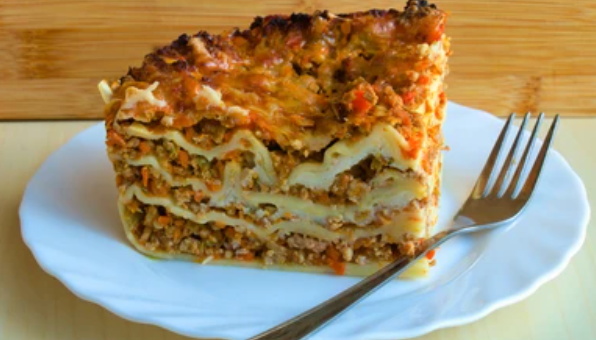

LASANIA
Return

Ingredients
- 12 Lasania noodles
- Sauce
- 1 lb Ground Beef/Turkey
- 1 jar (24 oz) marinara sauce
- 2 cups shredded mozzarella cheese
- 1 cup ricotta cheese (or cottage cheese)
- ½ cup grated Parmesan cheese
- 1 egg
- 1 teaspoon garlic powder
- 1 teaspoon Italian seasoning
- Salt and pepper to taste
Steps to cook Lasania
- Cook the noodles Boil - lasagna noodles according to the package instructions, then drain and set aside.
- Prepare the meat sauce - Cook the ground beef in a pan until browned. Drain excess fat, then add marinara sauce, garlic powder, Italian seasoning, salt, and pepper. Simmer for 5 minutes.
- Make the cheese mixture - In a bowl, mix ricotta cheese, egg, and Parmesan cheese.
- Layer the lasagna - In a baking dish, spread a thin layer of meat sauce, then layer noodles, followed by the ricotta cheese mixture and shredded mozzarella. Repeat until all ingredients are used, ending with mozzarella on top.
- Bake and serve – Cover with foil and bake at 375°F (190°C) for 30 minutes. Remove the foil and bake for another 10 minutes until the cheese is bubbly. Let it rest for 10 minutes before serving.